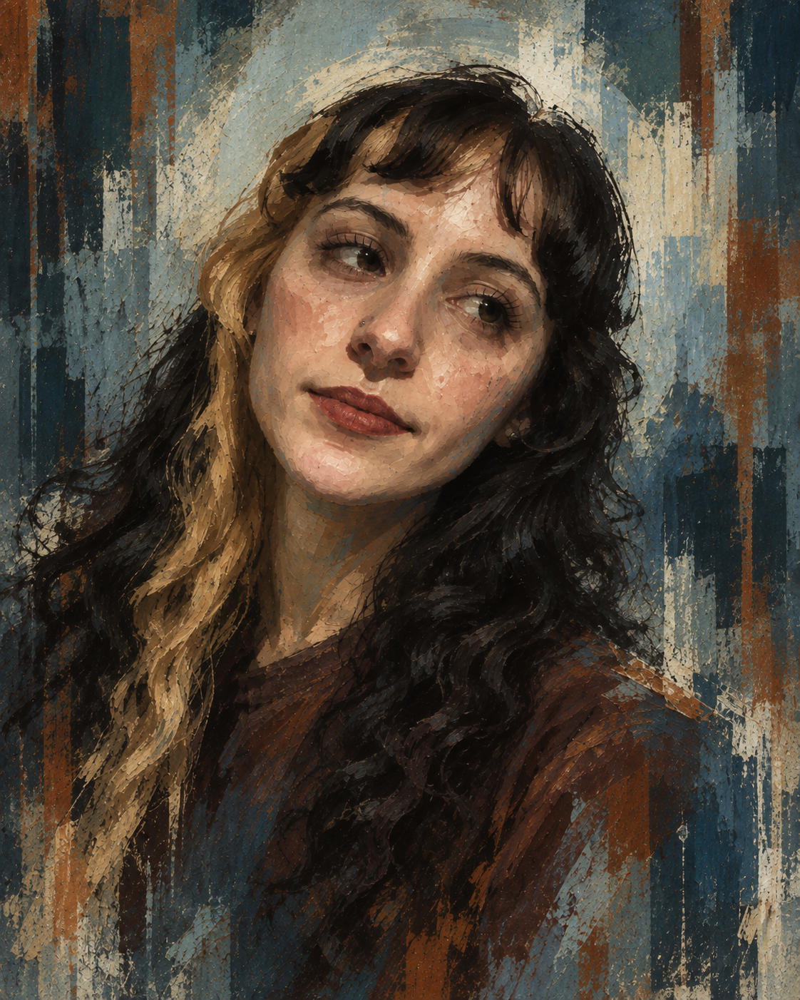

HABILIDAD
Caso no resuelto
EXPEDIENTE:
ANOMALÍA PENDIENTE DE RESOLUCIÓN
¿Por qué, si todas las combinaciones de dudas ya se jugaron y los átomos no nos permiten estar en otro lugar, este caso sigue figurando sin resolver?
Reconstrucción de sujeto
Antowoo
Antes de revisar la anomalía, el expediente necesita confirmar quién está leyendo cada evidencia.

SUJETO / ANTOWOOFicha del personaje
Sujeto confirmado
Diagnóstico — Volición
Sujeto con un protocolo inicial de timidez, pero es solo la primera capa antes de la entrega total. Años de estruendo y miedos pasados intentaron convencerte de mantener la distancia, pero tus ojos te traicionan: hay una belleza y una certeza en ellos que no pueden fingirse. Poseés un humor que desarma cualquier tormenta y una necesidad elemental de cercanía. No permitas que el registro de viejos errores dirija esta escena: tu arquitectura está intacta, tenés todo el derecho del mundo a dejarte cuidar y, sobre todo, entendé algo fundamental... este lugar es seguro. Ya no tenés que seguir huyendo del amor.
Empatía5/5
Imperio interior5/5
Volición5/5
 TTE. KITSURAGI / 41-B
TTE. KITSURAGI / 41-B
FICHA DE CAMPO / ARCHIVO ANEXADO
[DOCUMENTO ADJUNTO NO. 41-B — NOTAS DE CAMPO DEL TTE. KITSURAGI]
Anotado en el libretero:
- Evidencia de afinidad: Se ha detectado la presencia de un modelo a escala/figurina de este teniente en el área del sujeto. Afirma tenerle un aprecio particular. El dato carece de relevancia para la investigación policial, pero se registra en el archivo.
- Hábitos de esparcimiento: Alta inclinación por los sistemas de entretenimiento interactivo y los juegos digitales. Muestra además un marcado entusiasmo por el baile y la actividad festiva; suele convertirse, de forma involuntaria, en el centro de gravedad social del entorno.
- Análisis conductual y vocal: Ha participado en sesiones de karaoke. Las métricas de afinación vocal son objetivamente deficientes, pero el nivel de ejecución compensa cualquier desviación técnica. El sujeto simplemente busca pasarla bien.
- Preferencia nutricional de confort: El sujeto muestra una debilidad documentada por la repostería especiada, específicamente los rolls de canela. Se sugiere utilizar esta información con fines de pacificación o diplomacia.
- Evaluación de perfil y autopercepción: El sujeto sostiene la teoría de que es una mala persona y mantiene una sospecha inicial hacia los demás. La evidencia desmiente categóricamente su propia hipótesis: experimenta una densidad emocional desmedida (siente demasiado) y posee una bondad genuina. Su lenguaje primario ante la confianza incluye el uso de abrazos prolongados.
El sujeto juzga su propio valor con una severidad injustificada. Las pruebas reunidas en este cuaderno demuestran que es una presencia luminosa, afectuosa y fundamental para el equilibrio del ambiente. Recomiendo proceder con el cierre del expediente y asegurar su bienestar.
— K. Kitsuragi
Paso 1 de 4
El escenario
Durante el tipeo, hacé clic sobre el texto para completarlo.
CHECK BLANCO
8%
[EMPATÍA — IMPOSIBLE]
Determinar cuándo empezó todo esto.
PRUEBAS REVISADAS
0/3
Elegí cualquier tres esferas. No hay una combinación correcta.
Tirada roja
[VOLICIÓN — Dificultad 20]
Hacer la pregunta. Esta tirada no puede repetirse.
PROBABILIDAD
97%
El Primer Beso+5
El Budín de Limón+3
El “Te quiero” a la fuga+4
Lugar seguro+6
Fotos en Las Lomitas+2
Metegol en Acatraz+2
La forma de un hogar+10
Ganas absolutas de seguir encontrándose+99
NARRADOR
La persona a tu lado gira apenas el cuerpo hacia vos. El expediente entero converge en una sola pregunta.
Anto, ¿querés ser su novia?Resolución definitiva
CASO RESUELTO:
ALIANZA OFICIALIZADA
La anomalía deja de ser una anomalía. La evidencia recibe por fin el nombre que ya llevaba escrito entre líneas.
Efecto permanente
COMPAÑERA DE VIDA
Revisar el expediente desde el inicio
Inercia del invierno: -100% · Refugio: Infinito
Logro desbloqueado
NOVIAS
Desbloqueado